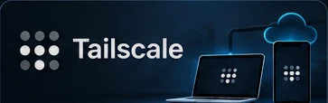

O que é a Tailscale?
A Tailscale cria uma rede privada virtual entre dispositivos autorizados, utilizando a tecnologia WireGuard. Os equipamentos podem comunicar usando endereços privados da rede Tailscale, sem que seja necessário publicar uma porta de entrada para cada serviço do laboratório.
Como é utilizada no Home Lab
Nos testes documentados, a Tailscale foi configurada em vários equipamentos, incluindo o pfSense, o Proxmox, um Mac e um computador Windows. Foi testado o acesso remoto à administração da firewall a partir do Mac.
Ponto de acesso remoto à administração da firewall, sujeito às regras de segurança existentes.
Host de virtualização associado à rede privada Tailscale.
Equipamentos cliente configurados para integrar a rede privada.
Por segurança, não são apresentados os IPs nem os nomes internos usados no laboratório.
Esta página descreve a utilização confirmada no laboratório; não afirma que todas as funcionalidades da Tailscale, como subnet routing ou exit nodes, estejam configuradas.
Ligação privada — esquema conceptual

Notas de segurança
- Autorizar apenas os dispositivos e utilizadores necessários.
- Aplicar autenticação multifator na conta e controlar as permissões de acesso.
- Manter as regras da firewall e os serviços atualizados.
- Não confundir conectividade Tailscale com autorização irrestrita às restantes VLANs.
Relação com o failover da internet
A existência de uma segunda ligação WAN pode ajudar a manter conectividade de saída em caso de falha da fibra. A continuidade de uma sessão remota depende também da reconexão, da política de encaminhamento e do acesso através da ligação LTE. Não é apresentada aqui uma validação específica da Tailscale durante a comutação de fibra para LTE.